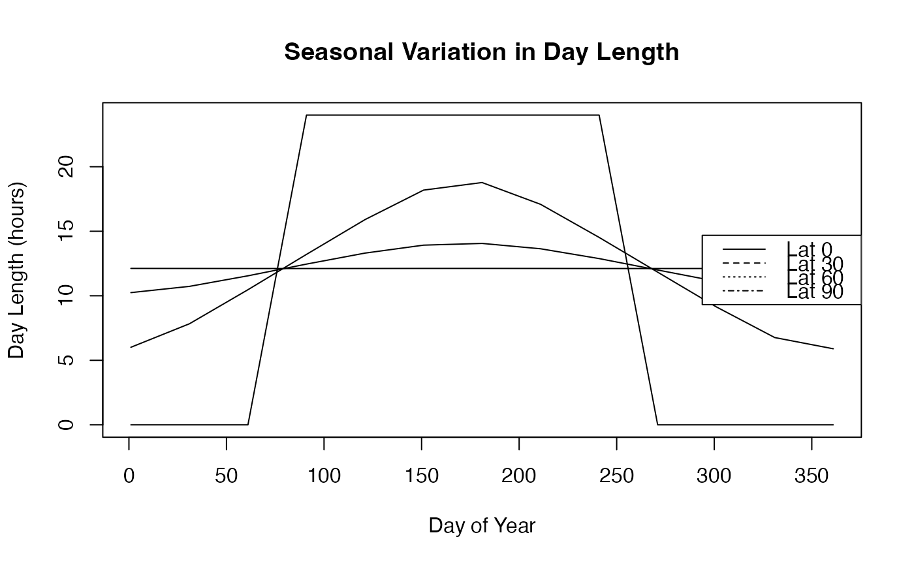

Computes solar day length (sunrise to sunset) in hours using latitude and day of year. Based on solar declination and hour angle.
References
Forsythe, W. C., E. J. Rykiel Jr., R. S. Stahl, H. Wu, and R. M. Schoolfield (1995). A model comparison for daylength as a function of latitude and day of year. Ecological Modeling, 80:87-95. doi:10.1016/0304-3800(94)00034-F
Examples
# Day length at equator vs. poles across year
lats <- c(0, 30, 60, 90)
doy_range <- seq(1, 365, by = 30)
plot(doy_range, rep(12, length(doy_range)), type = "n",
ylim = c(0, 24), xlab = "Day of Year", ylab = "Day Length (hours)",
main = "Seasonal Variation in Day Length")
for (lat in lats) {
dayl <- .day_length(lat, doy_range)
lines(doy_range, dayl, label = paste("Lat", lat))
}
#> Warning: "label" is not a graphical parameter
#> Warning: "label" is not a graphical parameter
#> Warning: "label" is not a graphical parameter
#> Warning: "label" is not a graphical parameter
legend("right", paste("Lat", lats), lty = 1:4)

# Extremes: minimum daylight at winter solstice (DOY 355)
.day_length(lat = 60, doy = 355) # High latitude: ~5-6 hours
#> [1] 5.866997
.day_length(lat = 0, doy = 355) # Equator: ~12 hours (constant)
#> [1] 12.1211